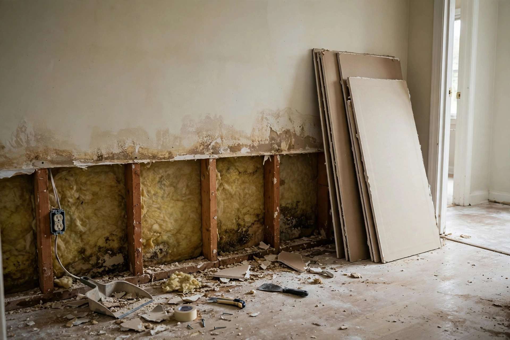

Water Damaged Drywall Repair in Nampa, ID
Soaked drywall doesn't recover — it sags, stains, and grows mold. We cut it back to solid material, dry the cavity, and rebuild it seamless.

The repair sequence
Cut and clear
Damaged board is cut back to solid material in straight lines. Wet insulation is removed and discarded.
Dry the cavity
Studs and plates dry with directed airflow. Meters confirm readings before new board is hung.
Hang and tape
New board goes up, seams are taped and mudded in thin coats with drying time between each.
Texture and paint
Texture is matched to the surrounding wall, then primer and paint blend the repair invisibly.
Common questions, straight answers
Do I need a permit to repair water-damaged drywall in Nampa?
For drywall replacement alone, usually not. But if the repair involves plumbing or electrical work, the Nampa Building Department at (208) 468-5435 can confirm what's needed.
How high do you cut out damaged drywall?
Above the visible water line — typically 12 to 24 inches past the damage. The cut is straight so new board fits cleanly.
Can wet drywall just dry out on its own?
Paper-faced drywall loses structural strength when soaked and grows mold readily. The EPA advises discarding drywall that has been wet and shows mold growth.
Will the repair be visible after painting?
A proper repair — straight cuts, taped seams, matched texture — disappears completely. Rushed patch jobs are the ones you can spot.
How long does drywall repair take?
Cut-out and drying take a day or two. Then new board, tape, texture, and paint add several more days with drying time between coats.
Repair or replace the room?
Section repair
When damage is limited to one wall or area, a clean flood cut and patch restores it without touching the rest of the room.
Whole-wall replacement
Extensive saturation or mold across the wall calls for full removal — faster and cleaner than patching piece by piece.
Permit questions? Nampa Building Dept (208) 468-5435 · Sources: EPA — Mold, Moisture & Your Home
Texture matching, explained
A drywall patch is only invisible if the texture matches. Nampa homes carry three common finishes. Orange peel — fine, dimpled spray — covers most 1990s and newer builds. Knockdown — flattened peaks — shows up in many 2000s subdivisions. Smooth finish appears in older plaster-adjacent remodels and high-end work.
Matching means replicating both the pattern and the density. A patch with the right texture but the wrong thickness still catches light differently. After texturing, primer seals the new board so the topcoat paint absorbs evenly — skipping primer is why patches flash through paint.
When the whole wall is repainted corner to corner, even a slightly imperfect match disappears. For single-patch repairs, the texture work has to be exact.
The flood-cut approach
- Water line marked and cut 12–24 inches above it
- Wet insulation pulled and discarded
- Studs and cavity dried with meters to verify
- New moisture-resistant board hung straight and true
- Seams taped, texture matched, paint blended
A Nampa renter reports bubbling paint low on the bedroom wall. The water heater in the adjacent closet has been seeping. A flood cut removes the damaged board, the heater is replaced, and the wall is rebuilt — texture matched so the patch is invisible.
How water ruins drywall
Not all water damage looks the same. The repair depends on what the water did.
Wicking from below
Water climbs drywall paper like a wick, often twice as high as the standing water reached. The visible line understates the damage.
Ceiling sag
Wet ceiling board loses strength and bows between joists. Sagging sections can't be salvaged — they come down.
Paper as food
Drywall paper is cellulose — mold food. Once growth starts in soaked board, cleaning the surface won't stop it.
Soggy drywall?
Cut it out right and it never comes back. Call for an honest assessment of what needs to go.